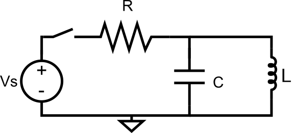
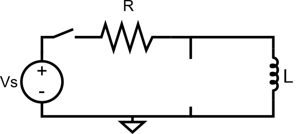
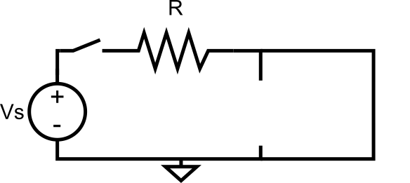

TEL131 Electrónica Digital
Marie González-Inostroza
Componentes capaces de acumular energía a través de un campo eléctrico
$Q=CV$
Componentes capaces de acumular energía a través de un campo eléctrico
$i_C=C\frac{dV}{dt}$
Componentes capaces de acumular energía en forma de campo magnético cuando la corriente fluye por ellos
$V_L = L \frac{di}{dt}$
Cuando un circuito se encuentra en un estado sin cambios en sus respectivos voltajes y corrientes
Los condensadores se comportan como circuito abierto
Los inductores se comportan como corto circuito
Cuando un circuito está pasando por un cambio en sus respectivos voltajes y corrientes
$i_C=C\frac{dVc}{dt}$ $=C*0=0$
$i_C=C\frac{dVc}{dt}$ $=C*0=0$
$V_R=Vs-Vc$ $=I*R=0*R$
$V_c=Vs$
Para $t$ mayor a 0 estamos en régimen transiente
$V_c=V_s(1-e^{\frac{-t}{RC}})$
$i_C=C\frac{dVc}{dt}$ $=\frac{V_s}{R}e^{\frac{-t}{RC}}$
Definimos la constante de tiempo $\tau=RC$
$V_c=V_s(1-e^{\frac{-t}{\tau}})$
$i_C=\frac{V_s}{R}e^{\frac{-t}{\tau}}$
$V_c=V_s(1-e^{\frac{-t}{\tau}})$
$i_C=\frac{V_s}{R}e^{\frac{-t}{\tau}}$
Cada grupo deberá decidir a cuál de las siguientes configuraciones perteneces cada gráfico. Los valores posibles para las resistencias son 50K, 10K y 1K, mientras que para los capacitores son 1uF o 100nF.